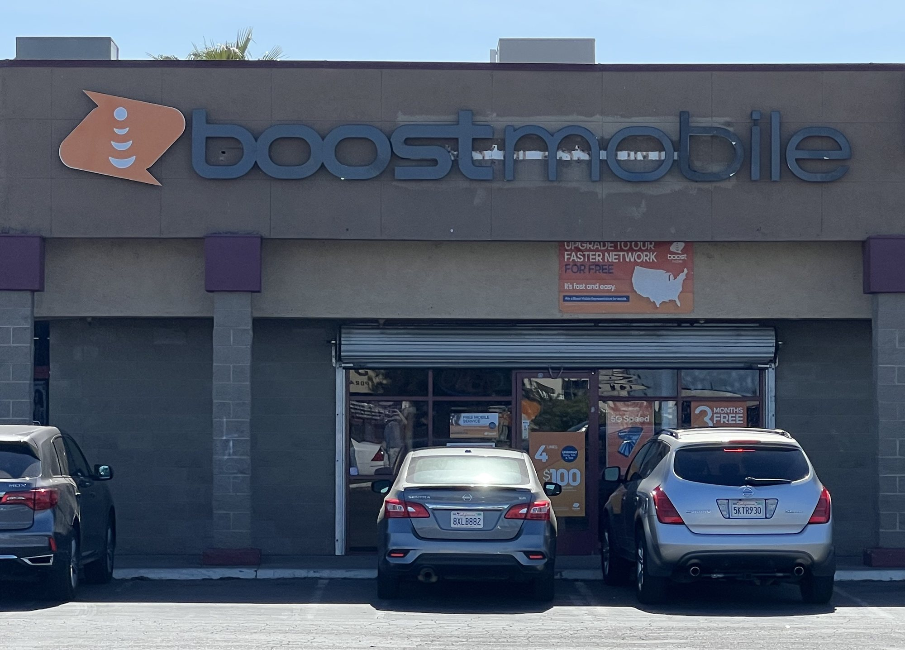
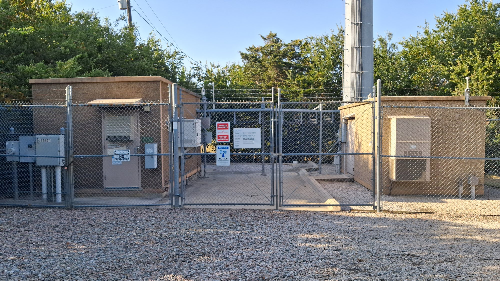
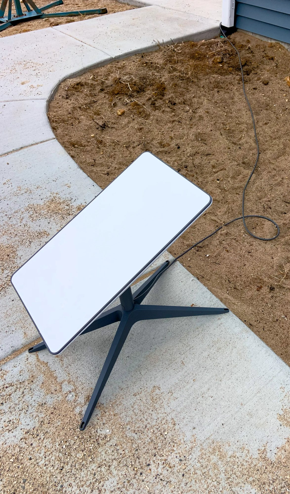

Lunedì 2 novembre 2026 è uscita negli Stati Uniti la notizia che SpaceX tratta da mesi con EchoStar, il gruppo che controlla Boost Mobile. Sul tavolo ci sono due strade: comprare Boost, con i suoi clienti e la sua struttura commerciale, oppure ottenere l’accesso alla rete che Boost usa. In entrambi i casi l’obiettivo è lo stesso: dare a Starlink Mobile una scorciatoia verso il mercato della telefonia americana, che vale circa 235 miliardi di dollari l’anno ed è dominato da tre soli operatori.
Che cosa si sa della trattativa
Il racconto parte da un rifiuto. Nei mesi scorsi Elon Musk ha chiesto personalmente ai vertici di Verizon e degli altri grandi operatori di aprire le loro reti a SpaceX, così da lanciare un servizio telefonico a marchio Starlink appoggiato alle loro antenne. Verizon, AT&T e T-Mobile hanno detto no. Da lì la ricerca di un’altra porta d’ingresso, e la porta più ovvia si chiama EchoStar.
Musk ha discusso l’operazione di persona: a ottobre ha incontrato Charlie Ergen, presidente e azionista di controllo di EchoStar. Le opzioni discusse sono l’acquisto di Boost Mobile oppure un accordo per usare la rete di Boost senza comprare l’azienda. Alcuni osservatori parlano anche di una terza ipotesi, più grande: l’acquisto dell’intera EchoStar. Per ora nessuna delle tre è stata confermata.
La reazione dei mercati è stata immediata. Nella mattinata di lunedì, prima dell’apertura di Wall Street, il titolo EchoStar saliva del 4 per cento e quello di SpaceX del 2,8. Verizon ed EchoStar non hanno voluto commentare; AT&T, T-Mobile, SpaceX e Musk non hanno risposto.

Perché proprio Boost
Boost Mobile è un marchio con una storia particolare. Nel 2020, per autorizzare la fusione tra T-Mobile e Sprint, le autorità americane imposero la vendita di Boost a Dish Network, il gruppo di Ergen, con l’idea di far nascere un quarto operatore nazionale capace di tenere a bada i tre grandi. Dish costruì una rete 5G propria, ma il progetto non decollò: la controllata Dish Wireless è finita in bancarotta e il quarto polo immaginato dai regolatori non è mai diventato un vero concorrente.
Oggi Boost ha una rete centrale 5G propria, ma per la copertura radio si appoggia soprattutto all’infrastruttura di AT&T, con un accordo separato anche con T-Mobile. A fine giugno EchoStar contava 7,38 milioni di abbonati mobili. Per SpaceX significherebbe partire non da zero ma da una base clienti già esistente, con negozi, distribuzione, assistenza e fatturazione già funzionanti: le parti meno spettacolari ma più costose del mestiere di operatore telefonico.
C’è poi un legame diretto con la storia recente di SpaceX. Lo spettro a 2 GHz su cui si basa la nuova generazione di Starlink Mobile (50 MHz nelle bande AWS-4 e H-block) arriva proprio da EchoStar, ceduto a SpaceX con un’operazione miliardaria. Con Ergen, insomma, Musk ha già fatto affari.
Il nodo: i contratti non passano di mano
Il problema è tecnico e legale insieme. Boost vende il proprio servizio come operatore virtuale (MVNO, cioè un gestore che usa la rete di un altro): i contratti di questo tipo di solito danno all’operatore che possiede la rete un diritto di veto se il cliente cambia proprietario. Tre persone vicine alle trattative hanno spiegato che un affitto di rete non si trasferisce a un nuovo padrone senza il permesso del grande operatore. Tradotto: AT&T e T-Mobile, cioè due delle aziende che hanno già respinto Musk, avrebbero l’ultima parola.
Gli analisti lo hanno detto senza giri di parole. Walter Piecyk e Joe Galone di LightShed Partners hanno scritto che SpaceX «non può semplicemente comprare Boost Mobile ed ereditarne i contratti con AT&T e T-Mobile», e di non vedere alcuna ragione per cui quei vincoli dovrebbero sparire con un cambio di controllo, né perché i due operatori dovrebbero aiutare un concorrente. Sam McHugh di BNP Paribas ha parlato di nessuna «porta sul retro» verso quei contratti.
Proprio McHugh, però, ha aggiunto una lettura più sottile: SpaceX potrebbe mettere in conto il veto. Se AT&T e T-Mobile bloccassero il trasferimento, l’azienda potrebbe portare la questione in tribunale sostenendo che i grandi operatori si coordinano per tenere fuori un nuovo concorrente. McHugh stesso è scettico sulle possibilità di successo. Anche Tim Farrar, consulente del settore satellitare, ritiene probabile il veto e pensa che una causa antitrust per ottenere l’accesso alla rete possa essere il vero obiettivo. David Barden di New Street Research vede invece più probabile una quota di minoranza in Boost, con il marchio poi rinominato o legato a Starlink Mobile: «E a quel punto Starlink è nel business della telefonia mobile. A meno che non venga fermata e citata in giudizio».

Il puzzle che SpaceX sta componendo
La trattativa su Boost è l’ultimo tassello di un mosaico costruito in poche settimane. All’inizio di ottobre la FCC ha autorizzato fino a 15.000 satelliti Starlink Mobile di seconda generazione, pensati per collegarsi direttamente ai telefoni. L’8 ottobre SpaceX ha firmato l’acquisto dello spettro a 800 MHz di Grain Management, quello che Musk chiamò «l’ultimo pezzo critico del puzzle dello spettro». A fine ottobre è emerso che l’azienda cerca di affittare almeno 80.000 siti per antenne, circa metà delle torri dedicate attive negli Stati Uniti, trattando con Crown Castle (circa 40.000 torri) e potenzialmente con American Tower e Vertical Bridge.
Nella conference call sui conti del terzo trimestre Musk è stato esplicito: «Costruiremo le nostre reti terrestri, in modo che ci sia connettività diffusa ovunque SpaceX e Starlink siano autorizzate a operare». Come primo passo ha proposto di aggiungere una piccola cella radio alle antenne Starlink già installate sui tetti, trasformando ogni casa abbonata in un minuscolo ripetitore per il vicinato. Gwynne Shotwell ha ricordato che gran parte del traffico al chiuso passa già dal Wi-Fi, e che lo spettro a 2 GHz servirà soprattutto al collegamento satellitare, mentre l’800 MHz dovrà dare copertura a terra e dentro gli edifici. Il servizio diretto ai telefoni con i satelliti propri è atteso per l’inizio del 2028, dopo il dispiegamento della nuova costellazione nel 2027.
Spettro, satelliti e torri, però, non bastano. Mancano i clienti, i negozi, l’assistenza, gli accordi per coprire le zone dove la rete propria non arriva ancora. Boost risponde a quasi tutte queste domande in un colpo solo. È per questo che la notizia di lunedì pesa più del singolo marchio.

I resti di Dish e l’ipotesi EchoStar intera
Se l’affare riguardasse tutta EchoStar, sul piatto ci sarebbe anche ciò che resta della rete di Dish Wireless. Durante la bancarotta Dish ha abbandonato circa 24.000 radio installate sulle torri; American Tower sostiene che ora appartengano ai proprietari delle torri, ma la questione è contesa. EchoStar pensava di ricomprarle partendo da un’offerta di 300 milioni di dollari, cifra bassissima per una rete nazionale. Farrar ritiene che SpaceX cercherebbe un’intesa con i proprietari delle torri per riprendere quei contratti, e che con le radio di Dish e lo spettro CBRS e AWS-3 rimasto a EchoStar mancherebbero soltanto «qualche decina di megahertz» di banda C alta per completare il quadro.
I dubbi: un mestiere diverso dai razzi
Non tutti sono convinti che il gioco valga la candela. Blair Levin, ex capo di gabinetto della FCC, riconosce la novità: «Per la prima volta c’è un soggetto capace di spaventare gli investitori dei tre grandi tradizionali». A differenza di Dish, che ha sempre avuto problemi di finanziamento, SpaceX può contare su mercati dei capitali generosi. Craig Moffett di MoffettNathanson, invece, ricorda che costruire una rete non è solo una questione di miliardi: servono decenni di lavoro per coprire stadi, aeroporti, gallerie e tutti i punti difficili. E si chiede perché SpaceX voglia entrare in un settore dove anche gli operatori storici faticano a guadagnare. Gli analisti di TD Cowen stimano in oltre 80 miliardi di dollari il costo di una rete terrestre nazionale costruita da zero.
C’è infine la politica. La notizia arriva alla vigilia delle elezioni di metà mandato del 3 novembre, e qualunque operazione dovrà passare dall’esame dei regolatori. Alcuni osservatori pensano che Musk abbia interesse a muoversi in fretta finché l’attuale amministrazione resta in carica.
Che cosa aspettarsi adesso
I segnali da seguire sono tre. Il primo è un eventuale annuncio formale di SpaceX o EchoStar: un accordo, una quota di minoranza o un’offerta per l’intero gruppo. Il secondo è la risposta di AT&T e T-Mobile, che con i loro contratti hanno in mano la chiave della rete di Boost. Il terzo sono le intese con i proprietari delle torri, che diranno quanto in fretta SpaceX intende costruire una rete propria. Per l’Italia e l’Europa l’impatto è indiretto: qui Starlink Mobile continuerà a passare da accordi con operatori locali. Ma se l’esperimento americano riuscisse, cambierebbe l’idea stessa di che cosa può essere un operatore telefonico.
Il dossier su Starfall, la capsula di rientro messa in vendita da SpaceX, passa all’archivio Notizie.
Fonti pubbliche e tracce
Ultimo aggiornamento editoriale: 4 novembre 2026, ore 9:30 (ora italiana). Nel corpo non si ripete la fonte a ogni frase: le tracce sono raccolte qui. Le citazioni in inglese sono tradotte in italiano. Le trattative non sono confermate dalle aziende.
- The Washington Post, Faiz Siddiqui e Patience Haggin, 2 novembre 2026: trattative SpaceX–EchoStar su Boost Mobile, incontro Musk–Ergen di ottobre, rifiuto dei tre grandi operatori, mercato da 235 miliardi.
- Reuters via Investing.com, 2 novembre 2026: 7,38 milioni di abbonati EchoStar, nodo del consenso di AT&T e T-Mobile.
- Broadband Breakfast, Jake Neenan, 2 novembre 2026: note di LightShed, New Street Research e BNP Paribas; ipotesi di Tim Farrar su EchoStar intera e radio di Dish.
- Starlink News, 2 novembre 2026: movimenti dei titoli EchoStar e SpaceX, struttura della rete di Boost, assenza di commenti delle aziende.
- Axios, Ina Fried, 3 novembre 2026: dichiarazioni di Blair Levin e Craig Moffett, storia di Boost e Dish, contesto politico.
- Bloomberg via Yahoo Finance, 22 ottobre 2026: ricerca di 80.000 siti, trattative con Crown Castle, citazione di Musk dalla call del terzo trimestre.
- Reuters via Investing.com, 22 ottobre 2026: stima TD Cowen oltre 80 miliardi, numero di torri di Crown Castle, American Tower e Vertical Bridge.
- Inside Towers, ottobre 2026: celle sulle antenne Starlink, ruolo dello spettro S-band e 800 MHz spiegato da Shotwell.
- Mobile World Live, ottobre 2026: servizio diretto ai telefoni atteso a inizio 2028, costellazione di nuova generazione nel 2027.
- Rivoluzione Spaziale, 9 ottobre 2026: il dossier sull’acquisto dello spettro a 800 MHz da Grain Management.
Fotografie utilizzabili
Non esistono foto libere delle trattative, che si svolgono a porte chiuse: le immagini mostrano i protagonisti della notizia. Tutte sono a licenza libera da Wikimedia Commons: negozio Boost Mobile in CC BY-SA 4.0, torre Crown Castle in CC0, antenna Starlink in CC0. Dettagli in scheda dei crediti fotografici.
Apri il dossier Starfall archiviato · Archivio Notizie · Torna a SpaceX